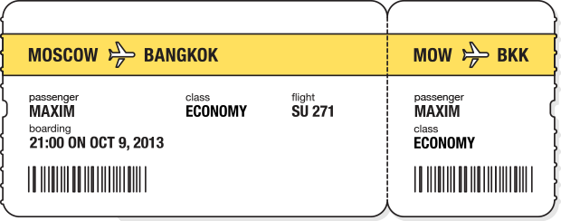
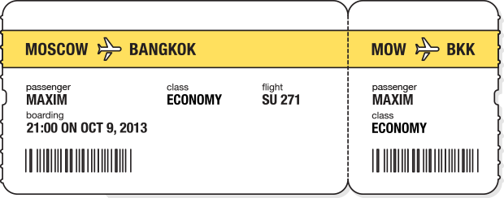
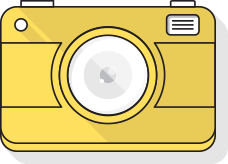
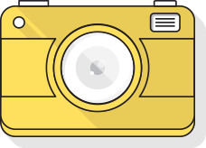
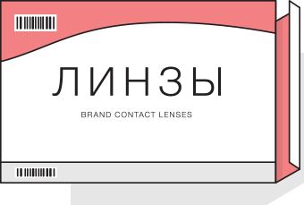
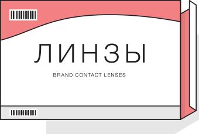

А что, если интернет подстроится под Вас?
Интернет сегодня — это не только информация и технологии, но и люди. Людей много и они все разные, а сайты для всех пользователей обычно выглядят одинаково. Яндекс уже научился адаптироваться под конкретного пользователя и готов поделиться этой технологией с другими.
«Атом». Технологическая платформа, задача которой — предоставить сайтам возможность изменять содержание страниц под конкретного пользователя.


 



 

Максим хочет увидеть настоящий, нетуристический Таиланд.
Он планирует путешествовать по стране самостоятельно, составлять маршрут по ходу. Поэтому всё, что ему нужно, — билет на самолёт.
Для путешествия по жаркой стране Максиму нужна удобная одежда и крепкая обувь.
Он не желает тратить время на походы по магазинам, ведь интересные ему вещи можно с лёгкостью найти в интернете.
Рюкзак с вещами и ноутбуком — вот и весь багаж Максима.
На метро он доберётся до вокзала, а оттуда поедет на аэроэкспрессе.
Максим не сидит на месте — в поисках интересных мест он колесит по всей стране.
Когда ночь застаёт его в пути, Максим просто находит ближайший хостел. Утром он решает — остаться и осмотреть местные достопримечательности или вернуться на дорогу.


 


Устав от турецких пляжей, Алексей Быков решил вывезти семью в Таиланд.
Он выбирает тур так, чтобы уложиться в адекватную сумму, но порадовать всех: приемлемый уровень комфорта, детская анимация, недалеко от пляжа, «все включено».
Алексей твердо уверен, что линзы практичнее обычных очков — как минимум потому, что вместе с ними можно надеть другие очки: для плавания или солнечные.
Он привык к тому, что у него всегда есть запас одноразовых линз.
У семьи Быковых с собой очень много багажа, большую часть которого занимают платья жены и детские вещи.
Ехать с сумками на общественном транспорте им совсем не хочется, тем более, когда есть вместительный автомобиль. Алексей решает переплатить за парковку у аэропорта, зато добраться с удобством.
Для Алексея один из основных мотивов выбора Таиланда — гастрономический: и он, и жена любят экзотическую кухню.
Каждый день они вместе отправляются на поиски новых ресторанов.


Григорий Иоганович Дауге редко отдыхает — бизнес требует от него полной отдачи.
Друзья и коллеги, переживающие за его здоровье, подарили ему билет в Таиланд. Поспорив для вида, Григорий Иоганович решает, что здоровье важнее, и садится выбирать отель.
Даже отдых должен приносить в жизнь что-нибудь новое — таков жизненный принцип Григория Иогановича.
В этой поездке он планирует научиться дайвингу: посмотреть на коралловые рифы и причудливых морских животных.
Перед отлётом Григорий Иоганович отправил своего личного водителя в отпуск.
Добираться до аэропорта он будет на такси.
В Таиланде Григорий Иоганович наконец понимает, как сильно он устал на работе.
Каждый день он в обязательном порядке ходит на массаж, а утро начинает с йоги.